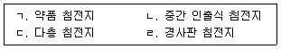
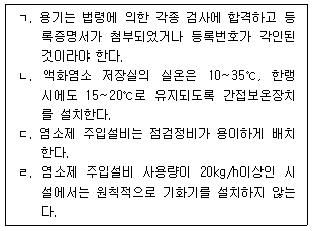
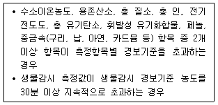
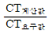
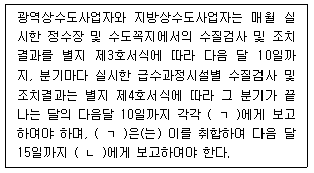
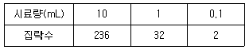
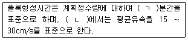
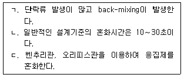
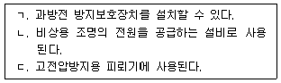
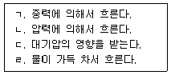

1과목: 수처리공정
1. 여과모래의 입경분포를 나타내는 입도가적곡선에서 60 % 통과입경이 0.8 mm이고 균등계수가 1.6일 때의 유효경(10 % 통과입경, mm)은?
2. 여과지의 역세척 방법으로 옳지 않은 것은?
3. 정수처리공정에서 탁질 등 미세입자를 제거시키는 여과지의 기능이 아닌 것은?
4. 급속여과지의 하부집수장치에 관한 설명으로 옳은 것은?
5. 응집제의 저장설비 및 주입설비 운영방법이 아닌 것은?
6. 급속여과방식에서 플록에 관한 설명으로 옳은 것은?
7. 여과수질의 탁도를 증가시키는 원인이 아닌 것은?
8. 침전지의 탁질 제거율을 향상시키기 위하여 침강면적을 크게 한 침전지를 모두 고른 것은?

9. 처리유량이 5,000m3/day인 정수장에서 염소를 6.2mg/L의 농도로 주입한다. 잔류염소 농도가 0.2mg/L일 때 염소요구량(kg/day)은? (단, 순도는 75%로 한다.)
10. 소독공정에서 염소소독 효과를 향상시키는 방법으로 옳은 것은?
11. 함수율 95%인 슬러지 600m3을 탈수하여 탈수케이크가 150m3일 때의 함수율(%)은? (단, 슬러지의 비중은 1로 한다.)
12. 오염된 원수에 대한 정수처리대책의 일환으로 응집ㆍ침전 이전의 처리과정에서 주입하는 염소처리방법은?
13. 다량의 조류가 유입되었을 때 정수처리에 미치는 영향이 아닌 것은?
14. 배출수 처리시설 및 처리방법에 관한 설명으로 옳은 것은?
15. 자외선 소독방법에 관한 설명으로 옳지 않은 것은?
16. 정수지에 관한 설명으로 옳은 것은?
17. 액화염소 소독제 관리방법에 관한 설명으로 옳은 것을 모두 고른 것은?

18. 배급수관망의 부식성 개선을 위한 방법으로 옳지 않은 것은?
19. 오존ㆍ입상활성탄 처리공정에 관한 설명으로 옳은 것은?
20. 정수처리공정에서 수질오염물질별 처리방법이 아닌 것은?
2과목: 수질분석 및 관리
21. 다음은 물환경보전법령상 수질오염감시경보의 어느 단계에 해당하는가?

22. 먹는물수질공정시험기준상 시험관법, 막여과법, 효소기질이용법으로 35 ± 0.5℃에서 배양하여 검출하는 미생물은?
23. 먹는물 수질감시항목 중 심미적 영향물질에 포함되면서 흙냄새 유발물질인 지오스민을 생성하는 미생물은?
24. 염소 소독 시 수중의 암모니아화합물과 염소가 반응하여 생성되는 물질이 아닌 것은?
25. 자-테스트(Jar-test) 결과 응집제 주입농도가 10mg/L이고 원수 유입량이 15m3/min일 때, 1일 응집제 투입량(kg/day)은?
26. 어느 시료에서 Ca2+=20mg/L, Mg2+ =12mg/L, HCO3-=61mg/L일 때 탄산경도(mg CaCO3/L)는? (단, Ca2+, Mg2+의 원자량은 각각 40, 24로 하며, HCO3-의 분자량은 61로 한다.)
27. 오존 이용률(흡수율)을 산출하는 인자로 옳지 않은 것은?
28. 제타전위(Zeta potential) 측정법에 관한 설명으로 옳지 않은 것은?
29. 수도용 막여과공정에서 분획분자량을 분리경으로 사용하는 막은?
30. 소독공정에서 불활성화비에 관한 설명으로 옳지 않은 것은?

)이다.31. 먹는물 수질기준 및 검사 등에 관한 규칙상 수질검사결과의 보고에 관한 규정내용이다. ( )에 들어갈 내용을 순서대로 바르게 나열한 것은?

32. 먹는물 수질기준 및 검사 등에 관한 규칙상 먹는물의 수질기준에서 수돗물 수질기준 항목들을 검사할 때 그 검출결과를 표현하는 단위로 옳지 않은 것은?
33. 정수처리 과정의 순서를 바르게 나열한 것은?
34. 수도법령상 시설용량이 일일 5,000세제곱미터 이상인 정수장에서 반기마다 1회 이상 조사하여야 하지만 과거 3년간 상수원수의 분원성 대장균군(또는 총대장균군) 평균이 ‘매우 좋음(Ⅰa)’ 등급이었을 경우, 조사를 면할 수 있는 미생물이 아닌 것은?
35. 먹는물 수질기준 및 검사 등에 관한 규칙에서 건강상 유해영향 유기물질 항목에 해당하지 않는 것은?
36. 먹는물 수질기준 및 검사 등에 관한 규칙상 먹는물의 수질기준에서 그 집락수를 수적으로 제한하지만 검출을 허용하는 미생물은?
37. 물환경보전법상 비점오염원이 아닌 것은?
38. 0.5 N 염산(HCl) 용액 100mL를 제조하려고 한다. 이 용액에 녹여야 할 염산의 양(g)은? (단, 수소와 염소의 원자량은 각각 1, 35이다.)
39. 먹는물 수질기준 및 검사 등에 관한 규칙상 먹는물의 수질기준에서 분원성 연쇄 상구균ㆍ녹농균ㆍ살모넬라 및 쉬겔라균을 검출할 때 사용하는 시료량(mL)은?
40. 수질오염공정시험기준에 따라 상수원수에서 분원성 대장균군을 막여과법으로 검출하여 아래 표와 같은 결과를 얻었다. 해당 상수원수에서 검출된 분원성 대장균군수(분원성 대장균군수/100mL)로 옳은 것은?

3과목: 설비운영(기계·장치 또는 계측기 등)
41. 급속여과지의 역세척에 필요한 기계설비는?
42. 약품별 내식성 재료의 연결이 옳지 않은 것은?
43. 다음 ( )에 들어갈 알맞은 내용은?

44. 응집을 위한 혼화시설에서 기계식 혼화방식에 관한 설명으로 옳은 것을 모두 고른 것은?

45. 액화염소 제해시설에 관한 설명으로 옳지 않은 것은?
46. 침전지 수중대차식 슬러지 수집기에 관한 설명으로 옳지 않은 것은?
47. 탈수기 부대설비 설치 시 고려사항으로 옳지 않은 것은?
48. 펌프의 작동원리에 따라 분류할 경우, 용적형 펌프에 해당하지 않는 것은?
49. 역류방지용 밸브가 아닌 것은?
50. 펌프의 운전 상태를 감시하고 제어하기 위해 필요한 기기가 아닌 것은?
51. 펌프계의 수격작용 경감대책으로 옳지 않은 것은?
52. 투과광측정방식 및 투과광산란비교방식을 사용하는 수질계측기는?
53. 컴퓨터 제어방식에서 집중제어방식에 관한 설명으로 옳은 것은?
54. 직류전원장치를 사용하는 전기설비에 관한 설명으로 옳은 것을 모두 고른 것은?

55. 배전용변전소의 송전단 전압이 6,800V, 정수장의 수전단 전압이 6,300V이다. 이 정수장에서 설비의 고장으로 부하가 차단된 경우 수전단 전압이 6,500V일 때, ( ㄱ )전압강하율과 ( ㄴ )전압변동률은 각각 약 몇 % 인가?
56. 계측제어설비시스템 구축에 관한 설명으로 옳은 것은?
57. 전자유량계 설치 방법에 관한 설명으로 옳은 것은?
58. 무정전 전원장치에 관한 설명으로 옳지 않은 것은?
59. 산업안전보건법령상 사업주가 대상화학물질을 취급하는 작업공정별로 관리요령에 포함되어야 할 사항이 아닌 것은?
60. 산업안전보건법령상 주요 구조 부분을 변경하는 경우 안전인증을 받아야 하는 기계ㆍ기구가 아닌 것은?
4과목: 정수시설 수리학
61. 직경 6m관이 직경 4m관으로 축소되어 물이 가득차서 흐르고 있다. 직경 6m관의 평균유속이 1m/sec일 때, 직경 4m관에서의 평균유속(m/sec)은 얼마인가? (단, 유량은 동일하며 모든 손실은 무시한다.)
62. 모세관현상에 관한 설명으로 옳은 것은?
63. 관수로의 유량측정장치로 옳지 않은 것은?
64. 베르누이(Bernoulli) 방정식이 성립하기 위한 조건으로 옳은 것은?
65. 물리량의 차원으로 옳지 않은 것은?
66. 직사각형 단면수로에 폭 2m, 높이 3m인 수문이 연직으로 설치되어 있다. 수심이 2m인 경우, 수문에 작용하는 전수압(tonf)은? (단, 물의 단위중량은 1.0tonf/m3이다.)
67. 어느 신도시의 상수관망을 설계하려고 한다. 최대 30 kPa의 수압을 견딜 수 있는 내경 500mm인 원형관을 사용하려 할 때, 관의 허용인장응력이 3MPa이면 관의 최소두께(mm)는?
68. 길이 20m, 유효수심 3m, 폭 6m의 제원을 갖는 침전지에 3m3/min의 유량이 유입되는 경우 체류시간(hr)은 얼마인가?
69. 스토크스(Stokes)의 법칙에 관한 설명으로 옳지 않은 것은?
70. 침전지에서 입자의 제거율을 향상시키는 방법으로 옳은 것은?
71. 사이폰(syphon)에 관한 설명으로 옳은 것은?
72. 직경 2m의 원통형 여과지에서 역세척을 매일 10L/m2ㆍsec로 15분간 실시한다. 소요되는 역세척 수량(m3/day)은 약 얼마인가?
73. A 정수장에서 약품의 효율적 주입을 위한 약품혼화지를 설치하고자 한다. 약품혼화지에 설치할 교반기의 요구동력에 관한 설명으로 옳은 것은?
74. 폭 4m, 높이 5m의 직사각형 개수로에 수심 3m의 물이 흐를 때 동수반경(m)은?
75. 급속여과지에 관한 설명으로 옳은 것은?
76. 관수로 흐름에서 발생하는 미소손실에 관한 설명으로 옳은 것은?
77. 직경 1.2m, 길이 10m인 관로에 2.0m3/sec 의 유량의 물이 흐른다. 2.5m의 마찰 손실수두가 발생할 때 마찰손실계수는 약 얼마인가?
78. 폭이 3m인 직사각형 수로에 수심 2m로 12m3/sec의 유량의 물이 흐를 때, 이 흐름의 프루드수(Froude number)는 약 얼마인가?
79. 지름 0.1cm인 유리관 속을 1.2cm3/sec의 물이 흐르는 경우 관의 레이놀즈 수(Re)는 약 얼마인가? (단, 물의 동점성계수 v =1.02×10-2cm2/sec이다.)
80. 관수로 흐름에 관한 설명으로 옳은 것을 모두 고른 것은?
